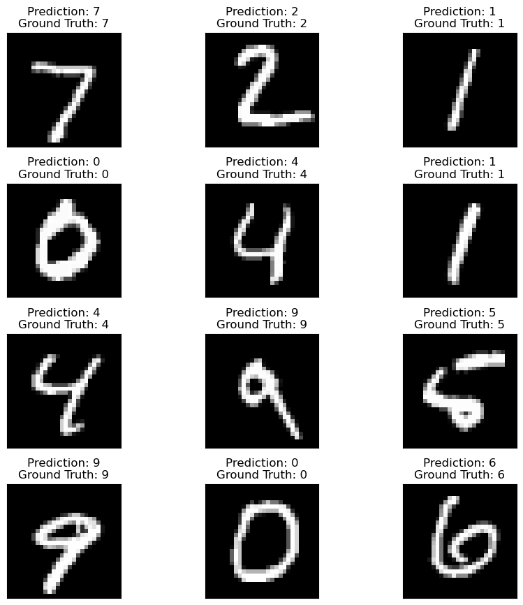
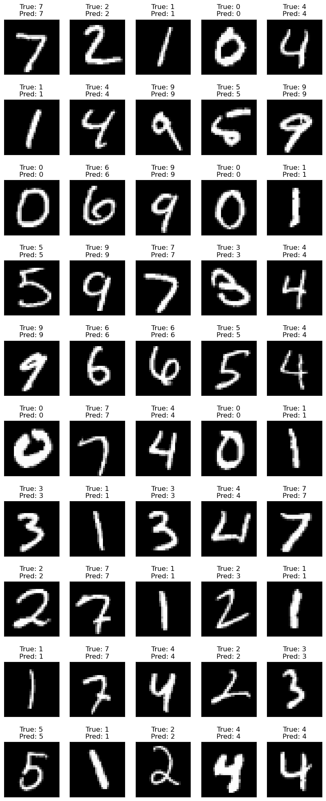

Demo of MNIST classifier in PyTorch#
Code from a minimal prompt to Google AI: “pytorch classifier mnist jupyter notebook”
Adjustments for Binder#
# Binder-safe prelude: put this at the VERY TOP (before DataLoader, etc.)
import os, sys
# 1) Keep CPU threading tame (Binder has 1–2 cores)
os.environ.setdefault("OMP_NUM_THREADS", "1")
os.environ.setdefault("MKL_NUM_THREADS", "1")
os.environ.setdefault("OPENBLAS_NUM_THREADS", "1")
os.environ.setdefault("NUMEXPR_NUM_THREADS", "1")
os.environ.setdefault("KMP_WARNINGS", "0") # quiet Intel MKL warnings
os.environ.setdefault("MKL_SERVICE_FORCE_INTEL", "1") # avoid oneMKL driver selection delays
import torch
# 2) Force CPU; Binder won't have CUDA/MPS anyway, and device checks can be slow
device = torch.device("cpu")
torch.set_num_threads(1)
# 3) Make PyTorch multiprocessing predictable in notebooks
import torch.multiprocessing as mp
try:
mp.set_start_method("spawn", force=True) # 'spawn' is safest on Binder
except RuntimeError:
pass # already set in this kernel
# 4) Safer DataLoader defaults on Binder (use these when you create loaders)
DATALOADER_KW = dict(
num_workers=0, # IMPORTANT: worker>0 often hangs on Binder
pin_memory=False, # CPU only
persistent_workers=False
)
print("Binder-safe prelude set. Torch:", torch.__version__, "Device:", device)
Binder-safe prelude set. Torch: 2.8.0 Device: cpu
One layer version#
#import torch
import torch.nn as nn
import torch.optim as optim
from torchvision import datasets, transforms
from torch.utils.data import DataLoader
import matplotlib.pyplot as plt
# 1. Data Loading
transform = transforms.Compose([
transforms.ToTensor(),
transforms.Normalize((0.1307,), (0.3081,))
])
train_dataset = datasets.MNIST('./data', train=True, download=True, transform=transform)
test_dataset = datasets.MNIST('./data', train=False, download=True, transform=transform)
# train_loader = DataLoader(train_dataset, batch_size=64, shuffle=True)
# test_loader = DataLoader(test_dataset, batch_size=1000, shuffle=False)
train_loader = DataLoader(train_dataset, batch_size=64, shuffle=True, **DATALOADER_KW)
test_loader = DataLoader(test_dataset, batch_size=1000, shuffle=False, **DATALOADER_KW)
# 2. Model Definition (Simple MLP)
class SimpleNN(nn.Module):
def __init__(self):
super().__init__()
self.fc1 = nn.Linear(28 * 28, 128)
self.relu = nn.ReLU()
self.fc2 = nn.Linear(128, 10)
def forward(self, x):
x = x.view(-1, 28 * 28) # Flatten image
x = self.fc1(x)
x = self.relu(x)
x = self.fc2(x)
return x
model = SimpleNN()
print(model)
SimpleNN(
(fc1): Linear(in_features=784, out_features=128, bias=True)
(relu): ReLU()
(fc2): Linear(in_features=128, out_features=10, bias=True)
)
# 3. Training Loop
criterion = nn.CrossEntropyLoss()
optimizer = optim.Adam(model.parameters(), lr=0.001)
num_epochs = 5
for epoch in range(num_epochs):
for images, labels in train_loader:
optimizer.zero_grad()
outputs = model(images)
loss = criterion(outputs, labels)
loss.backward()
optimizer.step()
print(f'Epoch {epoch+1}, Loss: {loss.item():.4f}')
Epoch 1, Loss: 0.0279
Epoch 2, Loss: 0.0276
Epoch 3, Loss: 0.0290
Epoch 4, Loss: 0.0115
Epoch 5, Loss: 0.0019
# 4. Evaluation
correct = 0
total = 0
with torch.no_grad():
for images, labels in test_loader:
outputs = model(images)
_, predicted = torch.max(outputs.data, 1)
total += labels.size(0)
correct += (predicted == labels).sum().item()
print(f'Accuracy on test set: {100 * correct / total:.2f}%')
Accuracy on test set: 97.36%
# Get a batch of images and labels from the test loader
examples = enumerate(test_loader)
batch_idx, (example_data, example_targets) = next(examples)
# Plot the first 6 images from the batch
num_images = 12
fig = plt.figure(figsize=(9, 9))
for i in range(num_images):
plt.subplot(int(num_images/3), 3, i+1)
plt.tight_layout()
plt.imshow(example_data[i][0], cmap='gray', interpolation='none')
# Make a prediction
with torch.no_grad():
output = model(example_data[i].unsqueeze(0))
prediction = output.argmax(dim=1).item()
plt.title(f"Prediction: {prediction}\nGround Truth: {example_targets[i]}")
plt.xticks([])
plt.yticks([])
plt.show()

Two layer version#
import torch
import torch.nn as nn
import torch.nn.functional as F
import torchvision
import torchvision.transforms as transforms
import matplotlib.pyplot as plt
# 1. Device configuration
device = torch.device('cuda' if torch.cuda.is_available() else 'cpu')
# 2. Hyperparameters
input_size = 784 # 28x28 pixels
hidden_size_1 = 256
hidden_size_2 = 128
num_classes = 10
num_epochs = 5
batch_size = 100
learning_rate = 0.001
# 3. MNIST dataset loading and transformation
transform = transforms.Compose([
transforms.ToTensor(),
transforms.Normalize((0.1307,), (0.3081,)) # Mean and std for MNIST
])
train_dataset = torchvision.datasets.MNIST(root='./data',
train=True,
transform=transform,
download=True)
test_dataset = torchvision.datasets.MNIST(root='./data',
train=False,
transform=transform)
train_loader = torch.utils.data.DataLoader(dataset=train_dataset,
batch_size=batch_size,
shuffle=True, **DATALOADER_KW)
test_loader = torch.utils.data.DataLoader(dataset=test_dataset,
batch_size=batch_size,
shuffle=False, **DATALOADER_KW)
# 4. Neural Network Definition
class NeuralNet(nn.Module):
def __init__(self, input_size, hidden_size_1, hidden_size_2, num_classes):
super(NeuralNet, self).__init__()
self.fc1 = nn.Linear(input_size, hidden_size_1)
self.relu1 = nn.ReLU()
self.fc2 = nn.Linear(hidden_size_1, hidden_size_2)
self.relu2 = nn.ReLU()
self.fc3 = nn.Linear(hidden_size_2, num_classes)
def forward(self, x):
out = self.fc1(x)
out = self.relu1(out)
out = self.fc2(out)
out = self.relu2(out)
out = self.fc3(out)
return out
model = NeuralNet(input_size, hidden_size_1, hidden_size_2, num_classes).to(device)
# 5. Loss and optimizer
criterion = nn.CrossEntropyLoss()
optimizer = torch.optim.Adam(model.parameters(), lr=learning_rate)
# 6. Training the model
total_step = len(train_loader)
for epoch in range(num_epochs):
for i, (images, labels) in enumerate(train_loader):
# Reshape images to (batch_size, input_size)
images = images.reshape(-1, input_size).to(device)
labels = labels.to(device)
# Forward pass
outputs = model(images)
loss = criterion(outputs, labels)
# Backward and optimize
optimizer.zero_grad()
loss.backward()
optimizer.step()
if (i+1) % 100 == 0:
print (f'Epoch [{epoch+1}/{num_epochs}], Step [{i+1}/{total_step}], Loss: {loss.item():.4f}')
Epoch [1/5], Step [100/600], Loss: 0.2475
Epoch [1/5], Step [200/600], Loss: 0.3138
Epoch [1/5], Step [300/600], Loss: 0.2900
Epoch [1/5], Step [400/600], Loss: 0.0961
Epoch [1/5], Step [500/600], Loss: 0.1861
Epoch [1/5], Step [600/600], Loss: 0.2016
Epoch [2/5], Step [100/600], Loss: 0.0451
Epoch [2/5], Step [200/600], Loss: 0.0848
Epoch [2/5], Step [300/600], Loss: 0.0884
Epoch [2/5], Step [400/600], Loss: 0.1325
Epoch [2/5], Step [500/600], Loss: 0.1538
Epoch [2/5], Step [600/600], Loss: 0.0269
Epoch [3/5], Step [100/600], Loss: 0.1017
Epoch [3/5], Step [200/600], Loss: 0.0183
Epoch [3/5], Step [300/600], Loss: 0.0216
Epoch [3/5], Step [400/600], Loss: 0.0776
Epoch [3/5], Step [500/600], Loss: 0.0403
Epoch [3/5], Step [600/600], Loss: 0.1171
Epoch [4/5], Step [100/600], Loss: 0.0601
Epoch [4/5], Step [200/600], Loss: 0.1253
Epoch [4/5], Step [300/600], Loss: 0.1111
Epoch [4/5], Step [400/600], Loss: 0.0310
Epoch [4/5], Step [500/600], Loss: 0.0762
Epoch [4/5], Step [600/600], Loss: 0.0199
Epoch [5/5], Step [100/600], Loss: 0.0852
Epoch [5/5], Step [200/600], Loss: 0.0656
Epoch [5/5], Step [300/600], Loss: 0.1027
Epoch [5/5], Step [400/600], Loss: 0.0830
Epoch [5/5], Step [500/600], Loss: 0.0074
Epoch [5/5], Step [600/600], Loss: 0.0196
# Optional: Visualize a few predictions
dataiter = iter(test_loader)
images, labels = next(dataiter)
images_flat = images.reshape(-1, input_size).to(device)
outputs = model(images_flat)
_, predicted = torch.max(outputs.data, 1)
num_test = 50
num_rows = int(num_test/5)
fig = plt.figure(figsize=(10, 2.5 * num_rows))
for i in range(5 * num_rows):
ax = fig.add_subplot(num_rows, 5, i + 1, xticks=[], yticks=[])
ax.imshow(images[i].squeeze(), cmap='gray')
ax.set_title(f"True: {labels[i].item()}\nPred: {predicted[i].item()}")
plt.show()
